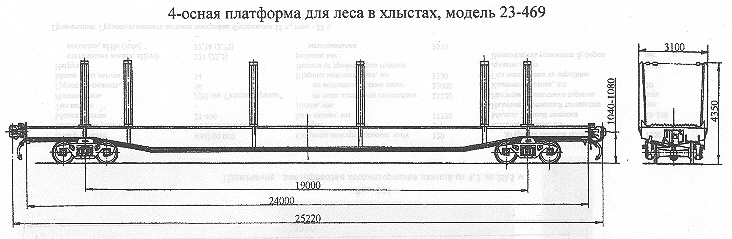

Назначение: для транспортировки леса в хлыстах
Параметры
| Номер проекта | 469.000.002 |
| Технические условия | ТУ 24-5-284-83 |
| Модель вагона | 23-469 |
| Тип вагона | |
| Изготовитель | ДВЗ им. Газеты "Правда" |
| Грузоподъемность, т | 65 |
| Масса тары вагона, т | 27,8 |
| Нагрузка: статическая осевая, кН(тс) |
227,4(23,2) |
| погонная, кН/м(тс/м) | 37,8(3,83) |
| Скорость конструкционная, км/ч | 120 |
| Габарит | 1-Т |
| База вагона, мм | 19000 |
| Длина, мм: по осям сцепления автосцепок |
25220 |
| по концевым балкам рамы | 24000 |
| Ширина максимальная, мм | 3100 |
| Высота от уровня верха головок рельсов, мм: максимальная |
4350 |
| до уровня настила пола | 1250 |
| Количество осей, шт. | 4 |
| Модель 2-осной тележки | 18-100 |
| Наличие переходной площадки | нет |
| Наличие стояночного тормоза | есть |
| Количество стоек, шт. | 12 |
| Год постановки на серийное производство | 1970 |
| Возможность установки буфера | нет |
Примечание: грузоподъемность вагонов постройки до 1983г. 59т.